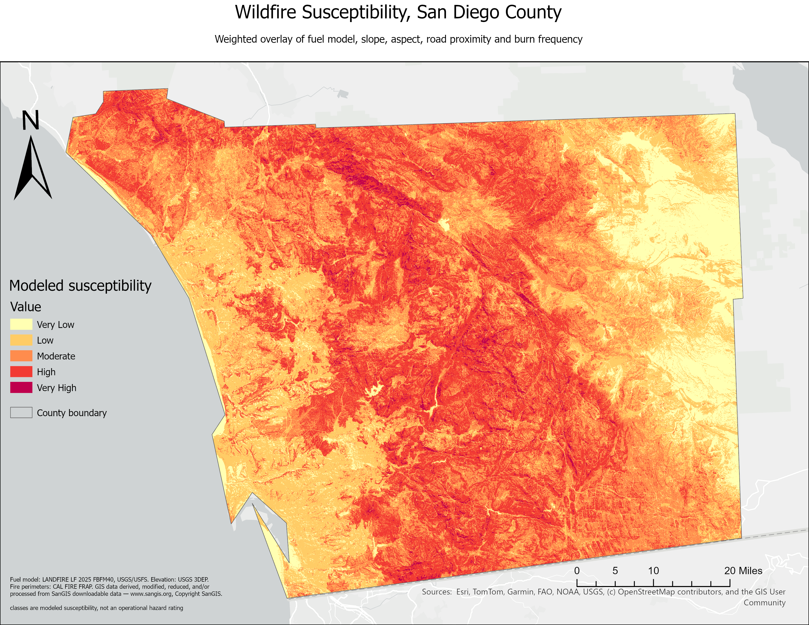

A 30-meter wildfire susceptibility model for San Diego County, built end to end in the Esri stack, covering 75 years of fire history, a burn-severity case study, a validated risk surface, and a mid-century climate projection.
California's statutory Fire Hazard Severity Zones (FHSZ) cover about 70% of San Diego County. Where they apply, are they capturing the right ground, and what, if anything, is happening on the 30% they don't cover? This project builds an independent, transparent susceptibility model from public data, checks it against the state's own product, and asks how both mid-century warming and a single well-documented fire (Valley Fire, 2020) stress-test the result.
The headline result: 30.2% of the county (825,811 acres) scores High or Very High susceptibility. The full interactive application is published as an ArcGIS StoryMap: Read the interactive story →
↑ Toggle layers in the top-right control. The susceptibility surface is the classified 30 m model (yellow → maroon, Very Low → Very High). Hover a fire perimeter or community boundary for details. Everything runs on one grid: NAD83 California Albers (EPSG 3310), 30 meters, 4,884 × 3,578 cells, 12,282,657 of them inside the county.
| Source | Used for | Vintage |
|---|---|---|
| LANDFIRE 2025 FBFM40 (USGS/USFS) | Fuel model | 2025, current-state |
| USGS 3DEP | Elevation → slope, aspect | Service current |
| SanGIS | Road network (proxy for ignition access) | 2026-08-24 pull |
| CAL FIRE FRAP | Fire perimeters, 1950–2025 | Pinned pre-firep25_1 release |
| CAL FIRE FHSZ | Statutory hazard zones (validation target) | Adopted April 2025 |
| MTBS + Copernicus Sentinel-2 | Burn severity, Valley Fire 2020 | Extended vs. immediate assessment |
| Cal-Adapt (4-model GCM ensemble) | Mid-century climate modifier | 4th CA Climate Change Assessment, CMIP5 |
| SANDAG Subregional Areas | 41 community boundaries | 2020 cycle |
Five input layers were reclassified to a common 1–5 scale and combined using a weighted sum (not ArcGIS's Weighted Overlay tool, which rounds to integers and mean-reverted the first attempt into a surface with zero Very High cells).
The model was validated against FHSZ using conditional distributions, not a single agreement statistic. Mean modeled susceptibility by FHSZ class is monotonic: Moderate 2.02 → High 2.62 → Very High 3.14. Climate was applied as a bounded modifier using a Cal-Adapt 4-model GCM ensemble (RCP 8.5 primary, RCP 4.5 comparison; 2035–2064 vs. 1985–2014), adjusting the existing 30 m surface rather than replacing it.
Since 1950, 46% of the county (1,247,928 acres) has burned at least once — not 72%, which is what naive summation of overlapping fire perimeters gives (reburn inflation factor: 1.66×). More fires does not mean more fire: the 1980s had the most ignitions of any decade (251) but burned only 7.8% of the total area, while the 2000s had 43% fewer fires and burned 41.8%. Mean fire size has collapsed: 6,112 acres in the 2000s, 840 in the 2010s (a 7× drop), 427 so far in the 2020s, while the 2020s simultaneously carry the second-highest ignition rate on record. Five years carry 54% of everything burned since 1950.
30.2% of the county scores High or Very High combined (825,811 acres). The Very High class alone is 49,632 acres, roughly three times the size of the 2020 Valley Fire.
| Class | Share | Acres |
|---|---|---|
| Very Low | 11.4% | 311,927 |
| Low | 28.1% | 767,801 |
| Moderate | 30.2% | 826,060 |
| High | 28.4% | 776,179 |
| Very High | 1.8% | 49,632 |
Where this model and FHSZ can be compared, they agree strikingly at the top of the scale: 99.6% of modeled Very High sits inside FHSZ Very High, and 94.3% of modeled High does too. But 398,874 acres of modeled High-or-Very-High land sit on ground the state's hazard maps do not classify at all — Federal Responsibility Area (Cleveland National Forest, Camp Pendleton, BLM parcels, tribal trust land) that FHSZ isn't built to cover. Only 45.2% of modeled Very High falls inside an FHSZ polygon at all.
The registered prediction was half right, and the half that failed is the more useful half. The immediate post-fire assessment read systematically higher than MTBS's extended assessment: mean dNBR 0.431 vs. 0.235, a difference of +0.196, higher in 95.6% of 73,667 co-registered cells, with spatial patterns correlating at 0.79. But the divergence was not concentrated in resprouting shrubland as predicted — the gap varies by only about 0.01 across fuel families covering 91% of the burn. The higher immediate reading is real; why it's uniform rather than concentrated is left open rather than guessed.
Mid-century hazard moves inland and upslope. Nine of 41 communities show higher susceptibility by 2035–2064 under RCP 8.5 — every one inland or backcountry, and six already sit in the county's seven most hazardous places today. Countywide, modeled area burned rises 3.53% under RCP 8.5 and 0.60% under RCP 4.5. The four climate models agree on the direction of change in only 44.0% of cells, and 10.2% of the county (279,725 acres) has no projection at all, left blank rather than interpolated across.
